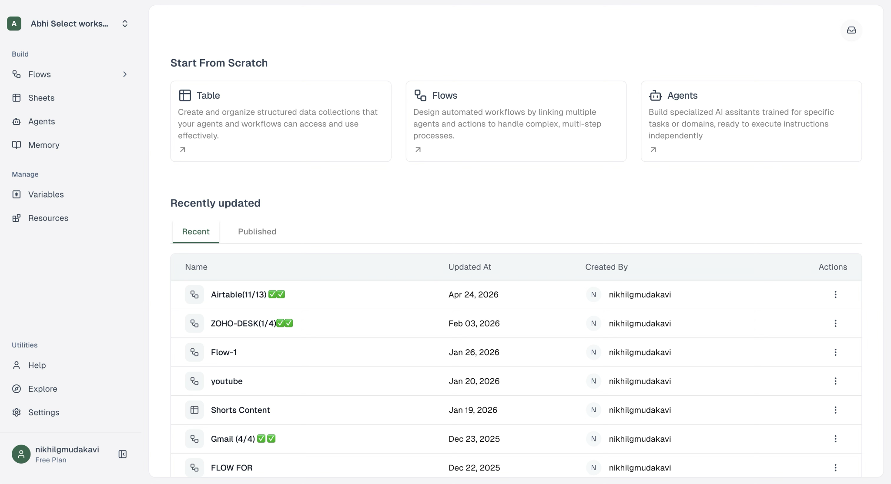
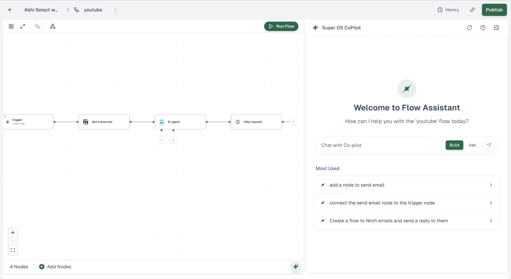
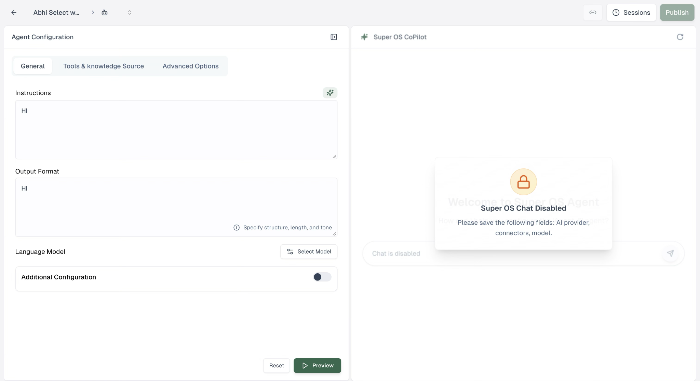
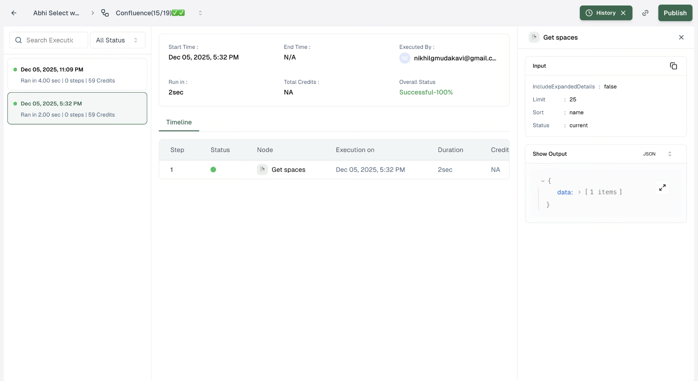
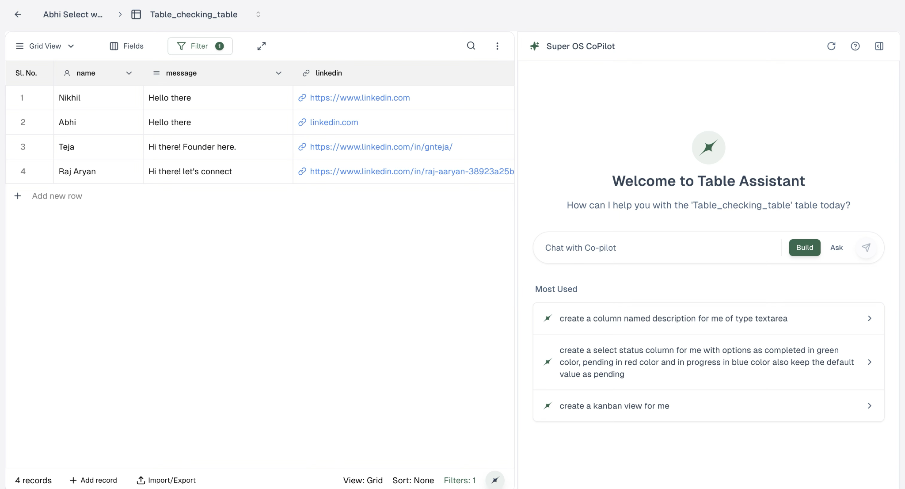

AutoCRUD
A unified platform to design and deploy AI agents and multi-agent workflows, helping teams streamline complex operations and accelerate business growth.

Product promise
AutoCRUD positions itself as a unified platform for creating AI-powered teams. It brings AI agents, multi-agent workflows and automation into one environment.
Core experience
- Visual drag-and-drop workflow builder
- React Flow-powered visual editor
- 50+ pre-built node components
- Real-time collaboration and version control
- Advanced debugging and execution tracking
AI agent orchestration
Multiple AI agents can work together, with each agent handling specific tasks and passing context to the next. The product also supports smart loops and conditions for branching and dynamic routing.
Connect data, logic and services
- Universal REST API and webhook connections
- Authentication, rate limiting and data transformation
- Data processing pipelines for transform, filter and enrichment
- Custom JavaScript, Python or SQL execution
- Email, Slack, SMS and push notifications
- Webhooks, schedules, file uploads and external-event triggers
Monitor and debug
Real-time monitoring lets users track workflow execution, inspect visual logs, retry failed steps and receive alerts. The design challenge is making complex automation legible while keeping the user in control of flow logic and system state.
Scale
Problem statement
Complex AI automation required users to understand agents, integrations, logic, execution state and debugging without losing control of the workflow.
Users / personas
Automation Builder
Needs to compose complex workflows without manually wiring backend services.
AI / Technical User
Needs control over agents, APIs, code, conditions and execution behavior.
Operations User
Needs to monitor runs, inspect failures and recover from errors quickly.
Information architecture
The experience is organized around a core loop: Build → Configure → Connect → Test → Debug → Monitor → Iterate. The visual canvas becomes the primary information architecture for the workflow.
Key user flows
Build workflow
Canvas → Add node → Configure → Connect context → Run.
Debug workflow
Run → Live execution → Inspect node → Retry / edit → Re-run.
Design system
The design system emphasizes node types, connection states, execution status, inputs/outputs, alerts and compact technical controls. The goal is consistency without hiding important system state.
Final product experience




Validation
Key validation areas were workflow comprehension, context passing, debugging visibility and recovery. The design direction prioritized transparency and user control rather than hiding technical behavior behind opaque AI automation.
End metrics / impact
Live product
Use the live experience as a companion to this case study. The screenshots above show the core workspace, agent, execution and data-table experiences.
Want to talk through a product challenge?
Let's connect and explore the problem, the users, and what a strong product experience could look like.